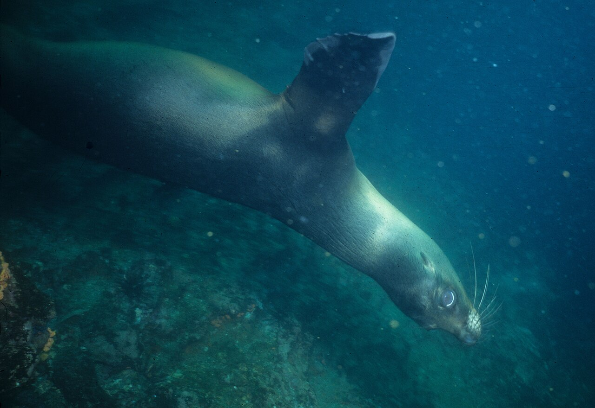

Darwin & Wolf
Galápagos, Équateur · plongée

Plongées de légende au milieu des bancs de requins-marteaux, otaries et raies mantas.
- Lieu
- Galápagos, Équateur
- Niveau
- Expert
- Activités
- plongée
- Type d'eau
- Mer / océan
- Coordonnées
- 1.68, -91.99 (position approximative du secteur)
Dangers à connaître
- Courants violents et houle.
- Grande faune pélagique.
Le conseil d'Ocean Buddy
Réservé aux plongeurs expérimentés, en croisière.
Ouvrir dans Ocean Buddy Télécharger sur l'App Store
Source : Description historique Ocean Buddy · vérification externe en attente.